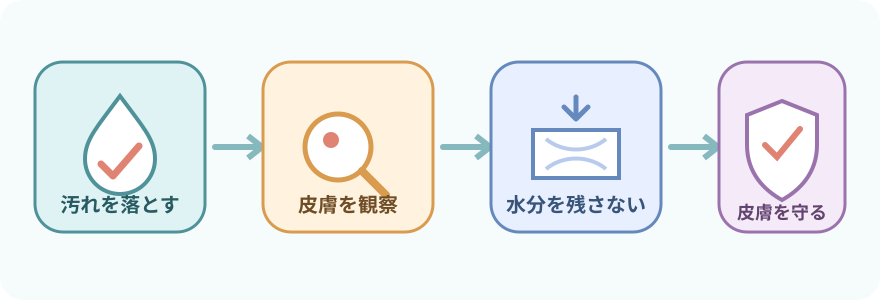
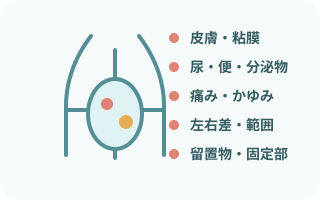
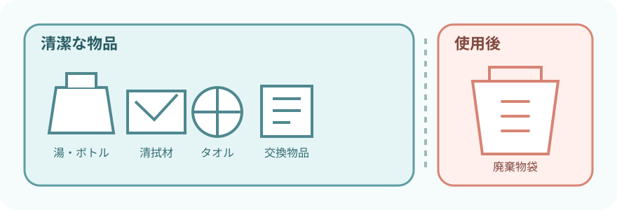
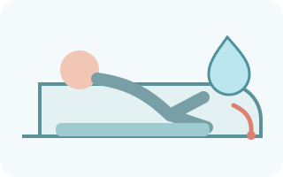
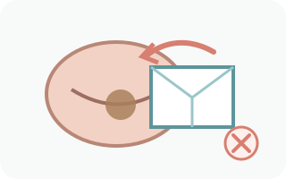
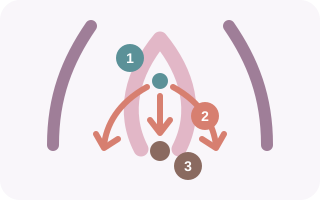
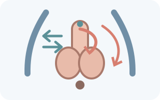
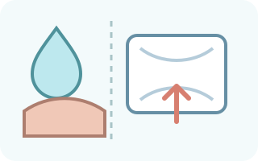
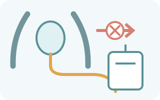
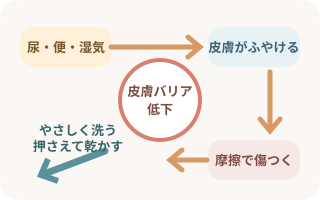

注意事項
- 外陰部・会陰部の手術直後、出血、深い創、強い疼痛がある
- 洗浄方法や体位に個別の制限がある
- 洗浄剤、保湿剤、皮膚保護剤、粘着剤にアレルギー歴がある
- 本人が拒否している、または十分な説明ができていない
目的

- 尿、便、汗、分泌物をやさしく除去する
- 不快感、臭気、かゆみを軽減する
- 発赤、びらん、浸軟、腫脹、疼痛などを早く見つける
- 失禁関連皮膚炎（IAD）などの皮膚障害を予防する
- 本人の尊厳と安楽を守る
観察項目

洗う前・洗いながら・洗った後を見る
- 皮膚：発赤、浸軟、びらん、亀裂、圧迫痕、発疹
- 粘膜：腫脹、出血、分泌物、臭気
- 症状：疼痛、かゆみ、灼熱感、違和感
- 排泄：尿・便の量と性状、失禁の頻度
- 留置物：カテーテル、ドレーン、創部、固定部の状態
赤みの形、左右差、境界、湿潤範囲も記録する。原因を見た目だけでIAD、真菌、接触皮膚炎、褥瘡などに決めつけない。
必要物品

- 洗浄用ボトル
- 患者に合う温度の湯
- 施設採用の洗浄剤
- ガーゼまたはやわらかい清拭材
- 防水シート
- 乾いたタオル
- 非滅菌手袋
- エプロン
- 飛散リスクに応じたマスク・眼の防護具
- 廃棄物袋
- 交換用の下着またはパッド
- 必要時、交換用おむつ
- 必要時、皮膚保護剤または保湿剤
- 必要時、体位保持用クッション
おむつ・パッドは特定の番号で固定せず、体格、排泄量、活動性、皮膚状態に合う製品を選ぶ。洗浄剤や皮膚保護剤は使用方法と洗い流しの要否を製品表示で確認する。
手順
- 説明し、希望とセルフケア能力を確認
本人確認、目的、方法、体位を説明。カーテンやドアを閉め、必要な部位だけ露出する。

物品・体位・湯温を整える防水シートを敷く。仰臥位や側臥位など、呼吸・疼痛・関節可動域に無理のない体位へ。湯は陰部にかける前に本人と確認する。

強い汚れを先に取り除く手指衛生後にPPEを装着。便などは、皮膚をこすらず、押さえるように除去する。汚れた面を使い回さない。

女性：前から後ろへ、肛門は最後必要に応じて陰唇を開き、尿道口周囲から外側へ一方向に洗う。鼠径部を洗い、肛門は最後。膣内へ湯や洗浄剤を入れない。

男性：尿道口から外へ、包皮は戻す陰茎を支え、尿道口周囲から外へ。亀頭、陰茎、陰嚢、鼠径部を洗い、肛門は最後。包皮を反転した場合は洗浄後に元へ戻す。

十分にすすぎ、押さえて乾かす洗い流す製品は残らないようすすぐ。しわや皮膚が重なる部分も確認し、乾いたタオルでこすらず押さえる。
- 皮膚を守り、環境を戻す
必要時は皮膚保護剤を製品表示どおりに使用。下着・パッド・おむつ、衣類、寝具、体位を整える。PPEを外して手指衛生し、観察と実施内容を記録する。
方法を個別化する
- 外陰部の形態、手術歴、性自認や羞恥心への配慮、本人が望む呼び方・介助者・介助方法を確認する
- 拘縮、疼痛、呼吸困難がある場合は、開脚や仰臥位を無理に続けない
- 創傷、皮膚疾患、放射線治療部位、ストーマがある場合は個別のケア計画へ
- 毎回石けんで何度も洗うのではなく、汚染量と皮膚状態に合わせる
- 洗い流さない清拭料を使う場合は、水洗い用の手順と混同しない
膀胱留置カテーテルがある場合

洗浄のために回路を外さない
- カテーテルを引っ張らず、尿道口周囲と皮膚を通常の衛生ケアで清潔にする
- 接続部を外さず、チューブの屈曲と牽引を防ぐ
- 採尿バッグは膀胱より低く保ち、床に置かない
- 固定具は汚染、浮き、皮膚障害、牽引を観察する
固定具を毎回交換するとは限らない。交換時期、剥離剤、貼付部位は製品と院内手順で異なる。カテーテルが抜けている、位置が変わった、出血・強い痛みがある場合は洗浄を続けず報告する。
失禁関連皮膚炎（IAD）を防ぐ

「洗いすぎ」と「こすりすぎ」も刺激になる
尿・便と湿気で皮膚がふやけたところへ摩擦が加わると、バリア機能が低下する。
- 排泄物を長時間皮膚に触れさせない
- 弱い力で洗い、押さえて水分を取る
- 必要時は皮膚保護剤で排泄物との接触を減らす
- 失禁の原因、パッドの吸収量、交換間隔も見直す
報告・記録
すぐに報告する変化
- 新しい出血、強い疼痛、急な腫脹
- 広がる発赤、びらん、水疱、皮膚欠損
- 膿性分泌物、強い悪臭、発熱など感染を疑う変化
- カテーテルの抜去・位置変化、尿流停止、血尿
- 本人の状態悪化や、ケアを続けられない苦痛
記録すること
- 実施時刻、方法、使用した洗浄剤・皮膚保護剤
- 皮膚・粘膜・排泄物・疼痛の観察
- 本人の反応とセルフケアの範囲
- 報告内容と、その後の対応